Sans rechargement : avant, après
Chantier « sans rechargement », lots 1 à 5 et revue, mesurés le 23 novembre 2026. Les mêmes 47 gestes que l'audit, les mêmes données inventées, le même téléphone simulé (390 × 844), quatre réseaux. « Avant » : le site de test d'aujourd'hui. « Après » : la copie du chantier, sur un téléphone qui a déjà ouvert l'application une fois (au tout premier passage, tout se télécharge une fois, comme aujourd'hui). « À l'écran » : le moment où l'artisan voit le résultat ; « fini » : quand le serveur a confirmé.
En bref
93a61d1 en service sur easy-offres.xtradev.ch depuis 21 h 29 : 1440 tests verts et analyse statique sans erreur avant l'envoi, migration de la table envoi jouée, sonde d'exposition verte, /sante au bon commit. En-têtes relus sur le site : fichiers versionnés gardés un an (immutable, sans ETag), sw.js et fichiers sans version en no-cache. Recette légère par l'interface, compte de démo du chantier : corbeille puis « Annuler » sans rechargement (ligne partie en 24 ms, confirmée en 111 ms ; revenue en 47 ms), service worker aux commandes, copies effacées à la déconnexion, aucune erreur JavaScript.| Réseau simulé | À l'écran (médiane) | Fini (médiane) | Téléchargé, 47 gestes | Rechargements |
|---|---|---|---|---|
| Localmême machine, aucun délai ajouté | 156 ms → 87 mstrès fréquents (14) : 115 ms → 49 ms | 158 ms → 102 ms | 5,4 Mo → 297 Ko326 → 55 requêtes | 31 → 10 |
| Fibre25 ms par aller-retour, 100 Mbit/s | 230 ms → 105 mstrès fréquents (14) : 193 ms → 45 ms | 253 ms → 118 ms | 5,4 Mo → 297 Ko326 → 55 requêtes | 31 → 10 |
| 4G100 ms, 9 Mbit/s en réception, 3 en envoi | 416 ms → 179 mstrès fréquents (14) : 363 ms → 43 ms | 571 ms → 187 ms | 5,4 Mo → 297 Ko326 → 55 requêtes | 31 → 10 |
| Chantier500 ms, 400 kbit/s en réception, 200 en envoi (3G faible) | 2,1 s → 632 mstrès fréquents (14) : 2,1 s → 49 ms | 4,3 s → 680 ms | 5,4 Mo → 297 Ko326 → 55 requêtes | 31 → 10 |
- Dans la mesure. La première campagne « après » bridait le réseau de la page, pas celui du service worker : chaque page qu'il allait chercher passait à la vitesse locale (ouvrir une offre « en 166 ms sur le chantier »). Le banc bride maintenant les deux, et chaque mesure note le nombre de service workers bridés. Ouvrir une offre sur le chantier prend 618 ms.
- Dans le code (lot 4). Une fois le banc juste, deux écrans sont sortis plus lents qu'avant sur le chantier : le catalogue (2,3 s avant, 2,6 s après) et « Facturer » (687 ms avant, 2,0 s après). Le service worker gardait les fichiers d'une page, un par un, avant de la rendre. Il la rend maintenant dès qu'elle arrive : 1,3 s et 680 ms. Toutes les mesures ont été refaites après ce correctif.
Les critères de la SPEC, un par un
Ceux que tu as validés avant le chantier, mesurés sur le réseau de chantier.
| Critère de la SPEC | Mesuré (chantier) | Verdict |
|---|---|---|
| « C'est juste », corbeille, « Annuler », prix dicté, option : écran changé en moins de 100 ms, une requête, moins de 3 Ko, l'écran ne saute pas | « C'est juste » 37 ms, 1 req., 2,2 Ko ; corbeille 6 ms dans la page, du clic au masquage (151 ms au banc, défilement de Playwright jusqu'à la ligne compris), 2,1 Ko ; « Annuler » 25 ms, 1 req., 4,6 Ko ; option 42 ms, 1 req., 4,5 Ko ; prix dicté 658 ms, 1 req., 2,3 Ko.« Annuler » et l'option reçoivent 4,5 Ko (la liste ou la ligne avec ses variantes) ; le prix dicté attend le serveur (écart à D2, à trancher plus bas). | En partie |
| Ouvrir une offre : aucun fichier statique redemandé, moins de 15 Ko | 1 requête, 14 Ko. | Tenu |
| « + Ligne » sans requête ; trois produits puis « Terminé » : trois requêtes au plus, aucun rechargement | ouverture : 0 requête ; un produit : 1 envoi de 5,0 Ko ; « Terminé » : 0 requête. Recette : trois produits, trois envois. | Tenu |
| Sans réseau, offre ouverte : aucune page d'erreur ; chaque geste gardé, appliqué une seule fois au retour, même rejoué | recette par vraie coupure (trois gestes, une seule fois en base, rien en double après rechargement) ; tests de la clé d'envoi (rejeu, réservation abandonnée). | Tenu |
| Deux gestes touchés vite, réseau lent : chacun garde son « Annuler » | deux corbeilles, deux « Annuler » (capture plus haut). | Tenu |
| Session perdue pendant un envoi : l'écran le dit, le geste attend, rien n'est perdu | « Session expirée : 1 changement attend. Se reconnecter » ; base inchangée pendant ; reconnecté : 7 en base (7 tapé sans session). | Tenu |
| Sans JavaScript, chaque formulaire marche comme aujourd'hui | navigateur au JavaScript coupé : « C'est juste » enregistré, quantité enregistrée, corbeille faite avec son « Annuler » ; page entière, comme avant.Défaut ancien, inchangé par le chantier : sans JavaScript, « Archiver » de la liste est sous la carte ; le toucher ouvre l'offre. | Tenu |
| Suite de tests verte ; un test par réponse en morceaux (droits, CSRF, isolation entre artisans) | 1440 tests, 12 015 assertions, verts sur la base du déploiement ; MorceauxTest, EnvoiCleTest (autre artisan, autre compte : 409), PdfGardeTest. | Tenu |
Les gestes qui comptent
« C'est juste » sur une ligne à vérifier
- Chantier : à l'écran 2,7 s → 37 ms ; fini 4,9 s → 678 ms ; 162 Ko → 2,2 Ko ; plus de rechargement.
- 4G : à l'écran 536 ms → 43 ms ; fini 714 ms → 199 ms ; 162 Ko → 2,2 Ko ; plus de rechargement.
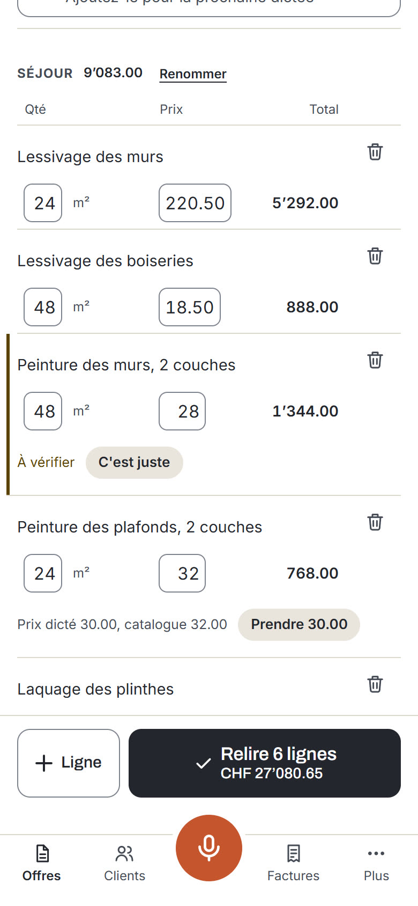
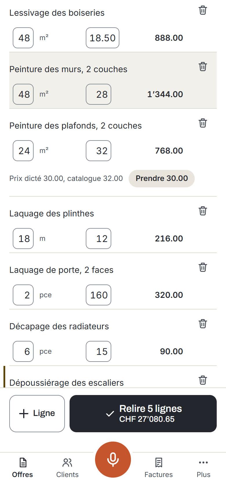
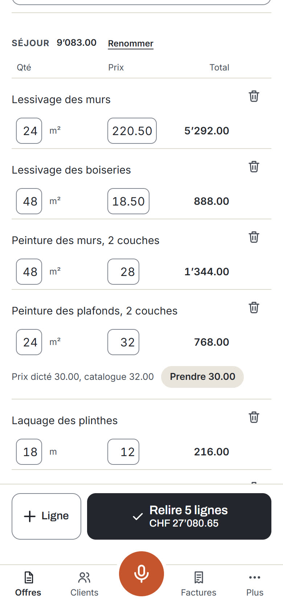
Deux corbeilles touchées vite, réseau lent
- Une corbeille :
- Chantier : à l'écran 2,8 s → 151 ms ; fini 5,0 s → 797 ms ; 162 Ko → 2,1 Ko ; plus de rechargement.
- 4G : à l'écran 618 ms → 112 ms ; fini 789 ms → 259 ms ; 162 Ko → 2,1 Ko ; plus de rechargement.
Mesurée dans la page, du clic au masquage de la ligne : 6 ms sur le chantier (cinq passages, de 5 à 6 ms). Le chiffre du banc compte en plus le défilement de Playwright jusqu'à la ligne.
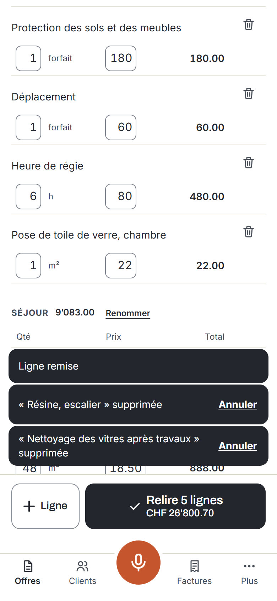
Ajouter un produit : « + Ligne », un produit, « Terminé »
- Chantier : à l'écran 5,4 s → 126 ms pour les trois touchers ; 236 Ko → 5,0 Ko. L'envoi du produit se confirme en fond (714 ms), sans bloquer le produit suivant.
- 4G : 953 ms → 116 ms ; 235 Ko → 5,0 Ko.

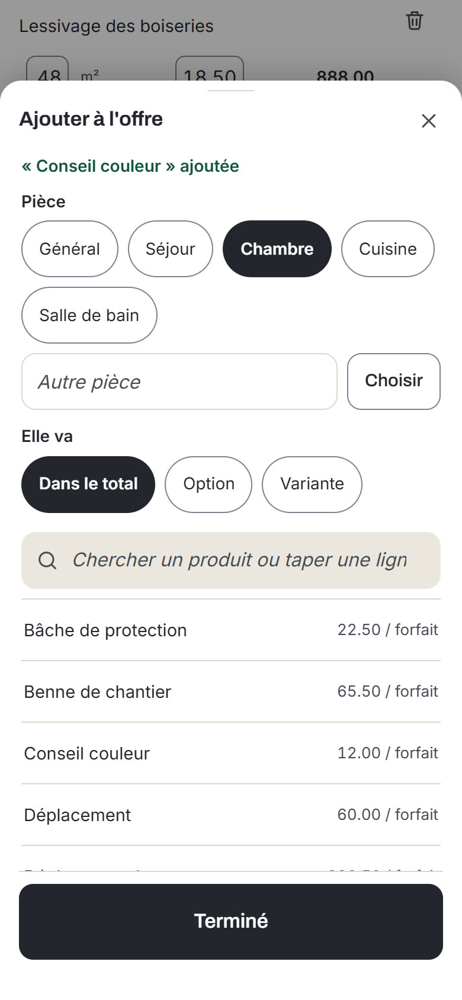
Quantité ou prix tapés
- Quantité :
- Chantier : à l'écran 1,6 s → 41 ms ; fini 1,6 s → 678 ms ; 25 Ko → 2,1 Ko.
- 4G : à l'écran 320 ms → 40 ms ; fini 320 ms → 182 ms ; 25 Ko → 2,1 Ko.
Avant, le montant attendait la réponse du serveur (« Enregistrement… »). Après, le montant de la ligne et le total changent à la frappe, marqués provisoires, puis le serveur les confirme. Sans réseau, ils restent provisoires et le changement attend (voir plus bas).
La liste : archiver, puis « Annuler »
- Archiver :
- Chantier : à l'écran 2,7 s → 39 ms ; fini 4,9 s → 591 ms ; 143 Ko → 1,1 Ko ; plus de rechargement.
- 4G : à l'écran 509 ms → 24 ms ; fini 693 ms → 181 ms ; 143 Ko → 1,1 Ko ; plus de rechargement.
- Remettre une offre des archives :
- Chantier : à l'écran 2,7 s → 102 ms ; fini 5,0 s → 731 ms ; 143 Ko → 1,7 Ko ; plus de rechargement.
- 4G : à l'écran 571 ms → 91 ms ; fini 759 ms → 244 ms ; 143 Ko → 1,8 Ko ; plus de rechargement.
Relecture
- « C'est juste » dans la relecture :
- Chantier : à l'écran 2,7 s → 49 ms ; fini 4,9 s → 655 ms ; 141 Ko → 0,6 Ko ; plus de rechargement.
- 4G : à l'écran 526 ms → 38 ms ; fini 679 ms → 179 ms ; 141 Ko → 0,6 Ko ; plus de rechargement.
- Ouvrir la relecture :
- Chantier : à l'écran 2,1 s → 632 ms ; fini 4,3 s → 646 ms ; 141 Ko → 4,0 Ko.
- 4G : à l'écran 399 ms → 196 ms ; fini 586 ms → 209 ms ; 141 Ko → 4,0 Ko.
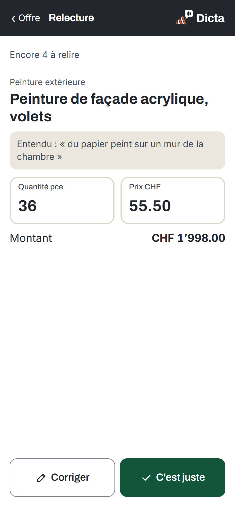
Changer d'écran
Ces gestes changent de page exprès. Le gain vient du lot 1 : la page seule voyage, le reste est dans le téléphone.
- Ouvrir une offre (33 lignes) :
- Chantier : à l'écran 2,2 s → 618 ms ; fini 4,3 s → 867 ms ; 162 Ko → 14 Ko.
- 4G : à l'écran 465 ms → 224 ms ; fini 550 ms → 239 ms ; 162 Ko → 14 Ko.
- Onglet « Clients » :
- Chantier : à l'écran 2,1 s → 624 ms ; fini 4,3 s → 668 ms ; 142 Ko → 4,9 Ko.
- 4G : à l'écran 411 ms → 201 ms ; fini 559 ms → 215 ms ; 142 Ko → 4,9 Ko.
- Ouvrir le catalogue :
- Chantier : à l'écran 2,3 s → 1,3 s ; fini 4,5 s → 1,3 s ; 157 Ko → 20 Ko.
- 4G : à l'écran 416 ms → 340 ms ; fini 544 ms → 351 ms ; 157 Ko → 20 Ko.
PDF : générer, rouvrir, envoyer
- Offre modifiée juste avant, PDF refait par le serveur :
- Chantier : à l'écran 11,8 s → 2,0 s ; fini 16,4 s → 2,0 s ; 277 Ko → 31 Ko.
- 4G : à l'écran 1,3 s → 612 ms ; fini 1,6 s → 615 ms ; 277 Ko → 31 Ko.
- Offre inchangée, PDF déjà vu :
- Chantier : 1,5 s, 9,3 Ko (le serveur répond « rien n'a changé »).
- 4G : 581 ms, 4,0 Ko (le serveur répond « rien n'a changé »).
« Envoyer » partage le PDF déjà chargé : une requête pour noter l'envoi, aucun rechargement.
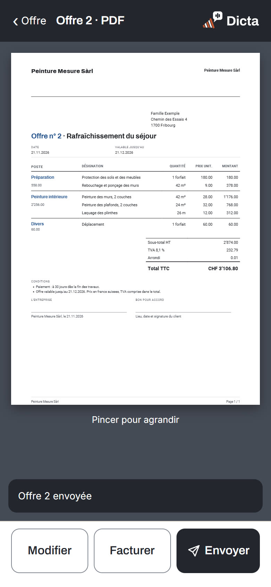
Facturer
- Ouvrir « Facturer » :
- Chantier : à l'écran 687 ms → 680 ms ; fini 687 ms → 682 ms ; 75 Ko → 75 Ko.
- 4G : à l'écran 182 ms → 176 ms ; fini 182 ms → 177 ms ; 75 Ko → 75 Ko.
- Créer la facture :
- Chantier : à l'écran 3,8 s → 1,8 s ; fini 8,3 s → 1,9 s ; 296 Ko → 36 Ko.
- 4G : à l'écran 711 ms → 552 ms ; fini 971 ms → 564 ms ; 282 Ko → 36 Ko.
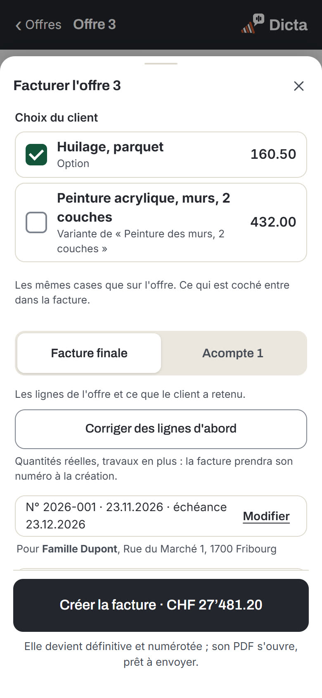
Sans réseau
Recette par une vraie coupure : le serveur du banc arrêté pendant que le téléphone se croit connecté (le pire cas réel). Le mode « hors ligne » de Chrome laissait passer le service worker, il ne prouvait rien.
Un geste sans réseau
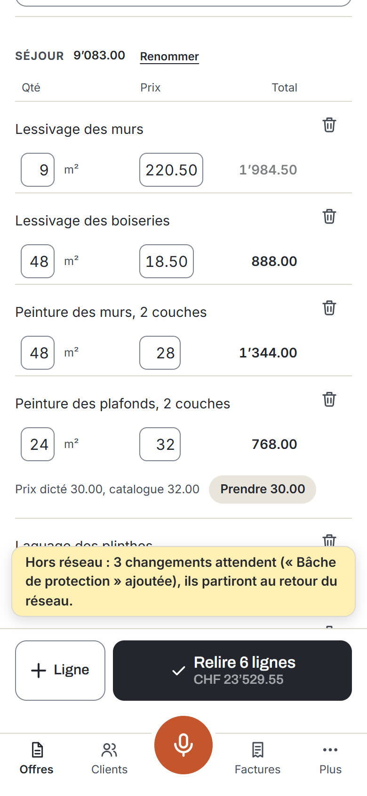
Ouvrir une autre offre sans réseau

Session perdue pendant un geste

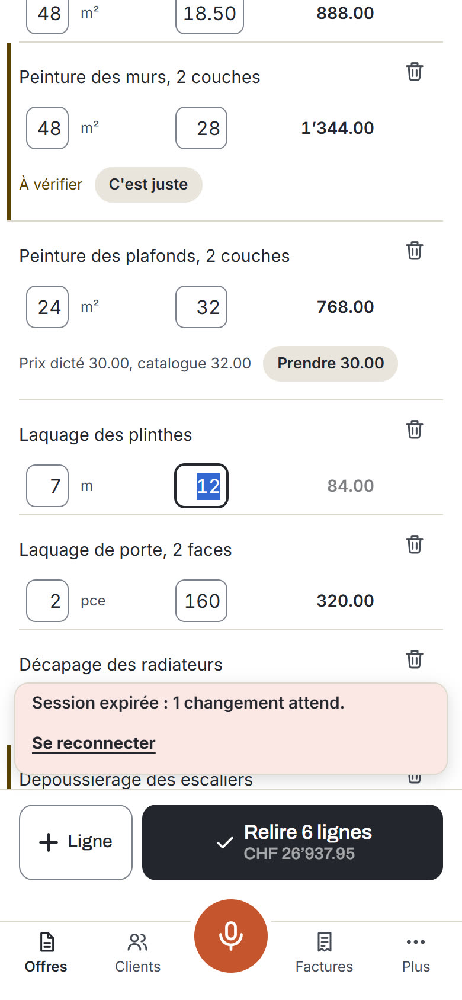
Le réseau revient
| Trois gestes faits pendant la coupure (« C'est juste », une quantité, « Bâche de protection » ajoutée) | bandeau : « Hors réseau : 3 changements attendent (« Bâche de protection » ajoutée), ils partiront au retour du réseau. » ; en base pendant la coupure : 0 ligne ajoutée. |
|---|---|
| Total provisoire | CHF 23’505.25 (provisoire) après le premier geste, recalculé par le serveur au retour. |
| La liste, puis une autre offre, ouvertes sans réseau | oui, Mes offres · Dicta ; offre 2 : gardée, Rafraîchissement du séjour · Dicta, scripts là, style là. |
| Offre 3 rouverte sans réseau | affichée après 29 ms, ses trois changements toujours en attente et nommés. |
| Page jamais ouverte, sans réseau | une page de l'application le dit (« Cette page n'a pas été gardée dans le téléphone ») ; plus de dinosaure de Chrome. |
| Retour du réseau | en base : étiquette levée, quantité 9, 1 ligne ajoutée, 3 clés d'envoi ; après un rechargement, toujours 1 ligne en plus : rien en double. |
| Session perdue pendant un geste | bandeau : « Session expirée : 1 changement attend. Se reconnecter » ; en base, rien tant que la session manque (48) ; reconnecté : 4, la valeur tapée. |
| Déconnexion | pages gardées effacées ([]) ; file du compte vidée ; les dictées à l'abri restent. |
| Erreurs JavaScript pendant toute la recette | 0 |
Total provisoire et total du serveur peuvent différer de quelques centimes (arrondi au 5 centimes fait par le serveur) : constaté 23’529.55 provisoire, 23’529.60 au retour. Le provisoire est marqué comme tel.
Ta question (D5) : comment il sait quoi garder et quoi renvoyer
- Ce qu'il garde pour te le montrer sans réseau. Chaque page que tu ouvres, sous ton compte, 14 jours au plus. En plus, quand tu ouvres la liste (au plus une fois par heure, écran calme) : la liste, le catalogue, les clients et les offres modifiées depuis 30 jours, une page à la fois (D6). Une offre déjà gardée se redemande seulement si elle a changé. Pas sur un réseau 2G ni en mode économie de données.
- Ce qu'il garde pour le renvoyer. Chaque changement fait dans une offre (une quantité, « C'est juste », une corbeille, un produit ajouté) part dans une file rangée dans le téléphone, avec une clé unique. La file part dans l'ordre. Sans réseau, elle attend, même application fermée ; elle repart seule au retour du réseau, ou à la prochaine ouverture de l'application. Un changement vieux de plus d'une semaine ne part plus, et l'écran le dit. Le serveur reconnaît la clé : un changement renvoyé deux fois n'est fait qu'une fois.
- Ce qui ne passe pas par la file. Créer une facture (sans réseau, rien n'est fait et la fenêtre le dit) ; les fiches du client et des réglages (sans réseau, l'écran dit « Pas enregistré ») ; la dictée, qui a son propre abri.
- Se connecter sans réseau : impossible, c'est normal. Le serveur doit vérifier le mot de passe. Connecté une fois, si le réseau tombe ensuite : les offres gardées s'ouvrent et se modifient, les changements attendent. C'est exactement ce que tu as constaté.
- À la déconnexion, tout ce que le téléphone gardait pour ton compte part (pages, PDF, changements en attente, après confirmation s'il en reste). Les dictées à l'abri restent : elles partent quand leur offre est prête.
Le téléphone garde 14 jours au plus des pages avec les noms, adresses et prix des clients. On l'écrit dans la politique de confidentialité ?
La revue de sécurité l'a relevé (D-I3) ; c'est ta décision.
Combien de temps le téléphone garde-t-il les pages et les PDF ?
Plus court : moins de données de clients dans un téléphone perdu ; plus long : des offres anciennes lisibles sans réseau.
Ta remarque (D1) : un style changé doit arriver sans histoire de cache
Chaque adresse de fichier porte l'empreinte de son contenu (app.css?v=…, 12 caractères tirés du fichier). Tant qu'il ne change pas, le téléphone le garde un an sans rien demander. Tu changes une ligne du style : l'empreinte change, la page demande une autre adresse, le téléphone prend le nouveau fichier à la page suivante. Rien à vider, rien à numéroter à la main. Le service worker lui-même (sw.js) n'est jamais gardé : une nouvelle version arrive à l'ouverture suivante.
/css/app.css?v=be5114002580. Une règle ajoutée à app.css, page suivante : /css/app.css?v=996a0bb9277b, règle appliquée, sans rien vider. Fichier remis : retour à /css/app.css?v=be5114002580.Ta remarque (D4) : le préchargement ne doit pas gêner
Il part au plus une fois par heure, quand l'écran est calme depuis quelques secondes et qu'aucun changement n'attend ; une page à la fois. Pendant qu'il tourne, toute requête de l'écran le met en pause : il reprend après 3 secondes de calme.
Revue : ce qui a été trouvé et corrigé
Quatre relecteurs indépendants, une lentille chacun : serveur, navigateur, régressions, sécurité. 4 bloquantes et 19 importantes, corrigées ; une seule en partie (la mention dans la politique de confidentialité, à toi). Le tableau reprend les 4 bloquantes et 12 importantes ; toutes, et les écartées avec leur raison, sont dans REVUE.md.
| Gravité | Trouvé | Corrigé | Preuve |
|---|---|---|---|
| Bloquante | Une clé d'envoi restée vide (processus tué) bloquait la file de l'artisan pendant 30 jours. | Réservation abandonnée libérée après 3 minutes. | test EnvoiCleTest |
| Bloquante | Corbeille d'une ligne à variantes : la variante paraissait deux fois, trois après « Annuler ». | La liste entière revient pour une ligne à variantes. | recette, capture ci-dessous |
| Bloquante | La carte des conditions portait l'id de son formulaire : « Enregistrer » ne faisait rien. | Carte renommée ; test qui interdit les doublons d'id. | test rouge avant, vert après |
| Bloquante | « Créer la facture » passait par la file : sans réseau, facture créée plus tard, en silence, peut-être deux fois. | Les actes qui mènent ailleurs n'entrent jamais dans la file. | recette hors réseau, capture ci-dessous |
| Importante | Un geste rejoué perdait ses messages (« Annuler », refus). | Messages rangés avec la clé, rendus au rejeu. | test |
| Importante | Gestes envoyés en vrac à la fermeture de la page. | Le geste en vol finit seul, les autres repartent dans l'ordre. | recette hors réseau |
| Importante | Deux comptes dans le même navigateur : un geste pouvait partir dans la session de l'autre. | Chaque geste porte son compte ; le serveur refuse l'autre (409), le téléphone garde le geste. | test |
| Importante | Le service worker pouvait montrer les pages d'un compte à un autre. | Copies lues sous le seul compte noté, effacées à toute entrée de session. | lecture, recette |
| Importante | Données de clients gardées sans limite dans le téléphone. | 14 jours au plus, effacées à la déconnexion. Reste à toi : la mention dans la politique de confidentialité. | test PdfGardeTest |
| Importante | Corriger une quantité puis toucher la corbeille faisait revivre la ligne. | Une ligne retirée reste cachée quelle que soit la réponse suivante. | recette |
| Importante | Relecture : deux touchers rapides validaient une ligne pas vue. | Bouton retenu 700 ms après chaque ligne. | recette |
| Importante | Sans réseau, « Envoyer » partageait le PDF sans les changements en attente. | « Envoyer » le dit et attend ; la file partie, l'aperçu se refait. | lecture |
| Importante | Une page gardée ne montrait pas les gestes en attente : risque de refaire un ajout. | Le bandeau nomme le geste ; la ligne provisoire se remontre. | recette, capture |
| Importante | Fichiers sans version servis du cache pour toujours. | Seul un fichier versionné est servi du téléphone d'abord. | lecture |
| Importante | Le bandeau du réseau faisait sauter la page. | Posé au-dessus des boutons du bas, sans décaler l'écran. | captures |
| Importante | Aucun test 422 ni 409 sur les morceaux ; trois assertions de la relecture passaient à vide. | Tests ajoutés, assertions refaites. | tests |
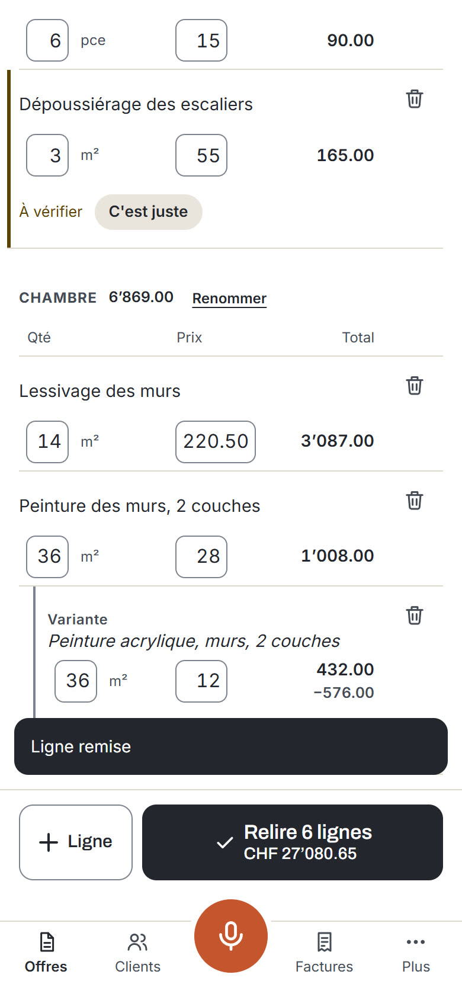
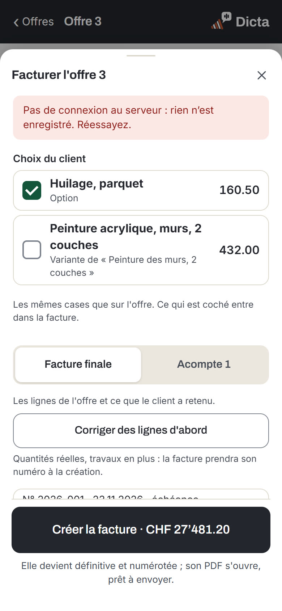
Trouvé pendant ce comparatif, en plus des deux erreurs du début : le bandeau disait « 1 changement attend, ils partiront » (accord corrigé) ; la mesure de « Générer » comparait un PDF déjà fait à un PDF refait (remesurée, offre modifiée juste avant) ; le préchargement ne cédait pas la place aux gestes une fois lancé (D4, corrigé : il se met en pause).
Le détail, geste par geste
Choisis le réseau, puis filtre par écran. « À l'écran » en gras, « fini » quand le serveur a confirmé. « Pareil » : moins de 50 ms d'écart, ce qui sépare deux passages du même geste au banc. Sur téléphone, chaque geste devient une carte.
500 ms, 400 kbit/s en réception, 200 en envoi (3G faible)
| Geste | Avant | Après | Gain | Maintenant |
|---|---|---|---|---|
| Ouvrir une offre (33 lignes)Mes offres · très fréquent | 185 ms à l'écranfini 185 ms · 8 req. · 162 Ko · page rechargée 272 ms à l'écranfini 272 ms · 8 req. · 162 Ko · page rechargée 465 ms à l'écranfini 550 ms · 8 req. · 162 Ko · page rechargée 2,2 s à l'écranfini 4,3 s · 8 req. · 162 Ko · page rechargée |
161 ms à l'écranfini 176 ms · 1 req. · 14 Ko · autre page 140 ms à l'écranfini 154 ms · 1 req. · 14 Ko · autre page 224 ms à l'écranfini 239 ms · 1 req. · 14 Ko · autre page 618 ms à l'écranfini 867 ms · 1 req. · 14 Ko · autre page |
pareil −132 ms −241 ms −1,6 s |
Change de page (voulu). Style, scripts et polices viennent du téléphone : seule la page voyage. |
| Trier les offres (puce de tri)Mes offres · occasionnel | 136 ms à l'écranfini 136 ms · 8 req. · 142 Ko · page rechargée 199 ms à l'écranfini 253 ms · 8 req. · 142 Ko · page rechargée 398 ms à l'écranfini 585 ms · 8 req. · 142 Ko · page rechargée 2,1 s à l'écranfini 4,3 s · 8 req. · 142 Ko · page rechargée |
36 ms à l'écranfini 38 ms · 0 req. · 0 Ko · sur place 47 ms à l'écranfini 50 ms · 0 req. · 0 Ko · sur place 45 ms à l'écranfini 46 ms · 0 req. · 0 Ko · sur place 49 ms à l'écranfini 50 ms · 0 req. · 0 Ko · sur place |
−100 ms −152 ms −353 ms −2,0 s |
Tri dans le téléphone, aucune requête. |
| Archiver une offre (glisser, Archiver)Mes offres · fréquent | 101 ms à l'écranfini 101 ms · 9 req. · 143 Ko · page rechargée 220 ms à l'écranfini 273 ms · 9 req. · 143 Ko · page rechargée 509 ms à l'écranfini 693 ms · 9 req. · 143 Ko · page rechargée 2,7 s à l'écranfini 4,9 s · 9 req. · 143 Ko · page rechargée |
31 ms à l'écranfini 70 ms · 1 req. · 1,1 Ko · sur place 31 ms à l'écranfini 105 ms · 1 req. · 1,1 Ko · sur place 24 ms à l'écranfini 181 ms · 1 req. · 1,1 Ko · sur place 39 ms à l'écranfini 591 ms · 1 req. · 1,1 Ko · sur place |
−70 ms −189 ms −485 ms −2,6 s |
La carte part au toucher, « Annuler » tout de suite ; l'envoi suit. |
| Supprimer une offre (glisser, Supprimer)Mes offres · occasionnel | 115 ms à l'écranfini 115 ms · 9 req. · 143 Ko · page rechargée 194 ms à l'écranfini 244 ms · 9 req. · 143 Ko · page rechargée 506 ms à l'écranfini 672 ms · 9 req. · 143 Ko · page rechargée 2,7 s à l'écranfini 4,9 s · 9 req. · 143 Ko · page rechargée |
31 ms à l'écranfini 86 ms · 1 req. · 1,1 Ko · sur place 34 ms à l'écranfini 105 ms · 1 req. · 1,1 Ko · sur place 17 ms à l'écranfini 158 ms · 1 req. · 1,1 Ko · sur place 22 ms à l'écranfini 613 ms · 1 req. · 1,0 Ko · sur place |
−84 ms −160 ms −489 ms −2,7 s |
La carte part au toucher, « Annuler » tout de suite ; l'envoi suit. |
| Restaurer une offre archivéeMes offres · rare | 202 ms à l'écranfini 202 ms · 9 req. · 143 Ko · page rechargée 327 ms à l'écranfini 374 ms · 9 req. · 143 Ko · page rechargée 571 ms à l'écranfini 759 ms · 9 req. · 143 Ko · page rechargée 2,7 s à l'écranfini 5,0 s · 9 req. · 143 Ko · page rechargée |
127 ms à l'écranfini 181 ms · 1 req. · 1,8 Ko · sur place 138 ms à l'écranfini 191 ms · 1 req. · 1,8 Ko · sur place 91 ms à l'écranfini 244 ms · 1 req. · 1,8 Ko · sur place 102 ms à l'écranfini 731 ms · 1 req. · 1,7 Ko · sur place |
−75 ms −189 ms −480 ms −2,6 s |
L'offre revient au toucher, à sa place dans le tri ; l'envoi suit. |
| Revenir à la liste (bouton retour du téléphone)Offre · très fréquent | 35 ms à l'écranfini 35 ms · 8 req. · 0,8 Ko · page rechargée 32 ms à l'écranfini 32 ms · 8 req. · 0,8 Ko · page rechargée 34 ms à l'écranfini 34 ms · 8 req. · 0,8 Ko · page rechargée 35 ms à l'écranfini 35 ms · 8 req. · 0,8 Ko · page rechargée |
39 ms à l'écranfini 51 ms · 1 req. · 0 Ko · autre page 36 ms à l'écranfini 48 ms · 1 req. · 0 Ko · autre page 39 ms à l'écranfini 52 ms · 1 req. · 0 Ko · autre page 33 ms à l'écranfini 45 ms · 1 req. · 0 Ko · autre page |
pareil pareil pareil pareil |
Change de page (voulu), aussi vite qu'avant. |
| Onglet ClientsBarre du bas · fréquent | 152 ms à l'écranfini 152 ms · 8 req. · 142 Ko · page rechargée 241 ms à l'écranfini 246 ms · 8 req. · 142 Ko · page rechargée 411 ms à l'écranfini 559 ms · 8 req. · 142 Ko · page rechargée 2,1 s à l'écranfini 4,3 s · 8 req. · 142 Ko · page rechargée |
91 ms à l'écranfini 106 ms · 1 req. · 4,9 Ko · autre page 99 ms à l'écranfini 112 ms · 1 req. · 4,9 Ko · autre page 201 ms à l'écranfini 215 ms · 1 req. · 4,9 Ko · autre page 624 ms à l'écranfini 668 ms · 1 req. · 4,9 Ko · autre page |
−61 ms −142 ms −210 ms −1,5 s |
Change de page (voulu) ; seule la page voyage. |
| Onglet PlusBarre du bas · fréquent | 113 ms à l'écranfini 128 ms · 8 req. · 141 Ko · page rechargée 229 ms à l'écranfini 270 ms · 8 req. · 141 Ko · page rechargée 375 ms à l'écranfini 555 ms · 8 req. · 141 Ko · page rechargée 2,1 s à l'écranfini 4,3 s · 8 req. · 141 Ko · page rechargée |
71 ms à l'écranfini 82 ms · 1 req. · 3,3 Ko · autre page 106 ms à l'écranfini 118 ms · 1 req. · 3,3 Ko · autre page 197 ms à l'écranfini 208 ms · 1 req. · 3,3 Ko · autre page 601 ms à l'écranfini 647 ms · 1 req. · 3,3 Ko · autre page |
pareil −123 ms −178 ms −1,5 s |
Change de page (voulu) ; seule la page voyage. |
| Ouvrir le catalogue (274 produits)Plus · fréquent | 156 ms à l'écranfini 158 ms · 11 req. · 157 Ko · page rechargée 243 ms à l'écranfini 243 ms · 11 req. · 157 Ko · page rechargée 416 ms à l'écranfini 544 ms · 11 req. · 157 Ko · page rechargée 2,3 s à l'écranfini 4,5 s · 11 req. · 157 Ko · page rechargée |
128 ms à l'écranfini 149 ms · 4 req. · 20 Ko · autre page 187 ms à l'écranfini 199 ms · 4 req. · 20 Ko · autre page 340 ms à l'écranfini 351 ms · 4 req. · 20 Ko · autre page 1,3 s à l'écranfini 1,3 s · 4 req. · 20 Ko · autre page |
pareil −56 ms −76 ms −1,0 s |
Change de page (voulu) ; seule la page voyage. |
| Ouvrir les réglagesPlus · occasionnel | 105 ms à l'écranfini 105 ms · 8 req. · 141 Ko · page rechargée 212 ms à l'écranfini 238 ms · 8 req. · 141 Ko · page rechargée 378 ms à l'écranfini 562 ms · 8 req. · 141 Ko · page rechargée 2,1 s à l'écranfini 4,3 s · 8 req. · 141 Ko · page rechargée |
75 ms à l'écranfini 88 ms · 1 req. · 3,5 Ko · autre page 105 ms à l'écranfini 118 ms · 1 req. · 3,5 Ko · autre page 189 ms à l'écranfini 201 ms · 1 req. · 3,5 Ko · autre page 612 ms à l'écranfini 647 ms · 1 req. · 3,5 Ko · autre page |
pareil −107 ms −189 ms −1,5 s |
Change de page (voulu) ; seule la page voyage. |
| « C'est juste » sur une ligne à vérifierOffre · très fréquent | 149 ms à l'écranfini 149 ms · 9 req. · 162 Ko · page rechargée 306 ms à l'écranfini 310 ms · 9 req. · 162 Ko · page rechargée 536 ms à l'écranfini 714 ms · 9 req. · 162 Ko · page rechargée 2,7 s à l'écranfini 4,9 s · 9 req. · 162 Ko · page rechargée |
40 ms à l'écranfini 112 ms · 1 req. · 2,2 Ko · sur place 36 ms à l'écranfini 109 ms · 1 req. · 2,2 Ko · sur place 43 ms à l'écranfini 199 ms · 1 req. · 2,2 Ko · sur place 37 ms à l'écranfini 678 ms · 1 req. · 2,2 Ko · sur place |
−109 ms −270 ms −493 ms −2,6 s |
L'étiquette part au toucher, l'envoi suit. |
| Retirer une ligne (corbeille ou glisser)Offre · très fréquent | 261 ms à l'écranfini 261 ms · 9 req. · 162 Ko · page rechargée 401 ms à l'écranfini 405 ms · 9 req. · 162 Ko · page rechargée 618 ms à l'écranfini 789 ms · 9 req. · 162 Ko · page rechargée 2,8 s à l'écranfini 5,0 s · 9 req. · 162 Ko · page rechargée |
145 ms à l'écranfini 206 ms · 1 req. · 2,1 Ko · sur place 161 ms à l'écranfini 232 ms · 1 req. · 2,1 Ko · sur place 112 ms à l'écranfini 259 ms · 1 req. · 2,1 Ko · sur place 151 ms à l'écranfini 797 ms · 1 req. · 2,1 Ko · sur place |
−116 ms −240 ms −506 ms −2,6 s |
La ligne part au toucher avec son « Annuler » ; total provisoire, confirmé par le serveur. |
| « Annuler » après avoir retiré une ligneOffre · fréquent | 165 ms à l'écranfini 165 ms · 9 req. · 162 Ko · page rechargée 310 ms à l'écranfini 315 ms · 9 req. · 162 Ko · page rechargée 530 ms à l'écranfini 721 ms · 9 req. · 162 Ko · page rechargée 2,7 s à l'écranfini 4,9 s · 9 req. · 162 Ko · page rechargée |
22 ms à l'écranfini 84 ms · 1 req. · 4,5 Ko · sur place 32 ms à l'écranfini 123 ms · 1 req. · 4,6 Ko · sur place 34 ms à l'écranfini 178 ms · 1 req. · 4,6 Ko · sur place 25 ms à l'écranfini 700 ms · 1 req. · 4,6 Ko · sur place |
−143 ms −278 ms −496 ms −2,7 s |
La ligne revient au toucher, à sa place ; l'envoi suit. |
| Prix dicté : « Prendre »Offre · fréquent | 169 ms à l'écranfini 169 ms · 9 req. · 162 Ko · page rechargée 230 ms à l'écranfini 288 ms · 9 req. · 162 Ko · page rechargée 557 ms à l'écranfini 747 ms · 9 req. · 162 Ko · page rechargée 2,6 s à l'écranfini 4,8 s · 9 req. · 162 Ko · page rechargée |
100 ms à l'écranfini 102 ms · 1 req. · 2,3 Ko · sur place 109 ms à l'écranfini 111 ms · 1 req. · 2,3 Ko · sur place 181 ms à l'écranfini 183 ms · 1 req. · 2,3 Ko · sur place 658 ms à l'écranfini 660 ms · 1 req. · 2,3 Ko · sur place |
−69 ms −121 ms −376 ms −2,0 s |
Le bouton se grise au toucher ; la question suivante vient du serveur, l'écran l'attend. |
| Prix dicté : « Mettre aussi au catalogue ? Oui »Offre · fréquent | 168 ms à l'écranfini 168 ms · 9 req. · 162 Ko · page rechargée 305 ms à l'écranfini 309 ms · 9 req. · 162 Ko · page rechargée 526 ms à l'écranfini 700 ms · 9 req. · 162 Ko · page rechargée 2,7 s à l'écranfini 4,9 s · 9 req. · 162 Ko · page rechargée |
87 ms à l'écranfini 89 ms · 1 req. · 2,2 Ko · sur place 111 ms à l'écranfini 113 ms · 1 req. · 2,2 Ko · sur place 185 ms à l'écranfini 187 ms · 1 req. · 2,2 Ko · sur place 647 ms à l'écranfini 648 ms · 1 req. · 2,2 Ko · sur place |
−81 ms −194 ms −341 ms −2,0 s |
Le bouton se grise au toucher ; le prix et les totaux viennent du serveur, l'écran les attend. |
| Corriger une quantité (taper, Entrée)Offre · très fréquent | 115 ms à l'écranfini 115 ms · 2 req. · 25 Ko · sur place 174 ms à l'écranfini 174 ms · 2 req. · 25 Ko · sur place 320 ms à l'écranfini 320 ms · 2 req. · 25 Ko · sur place 1,6 s à l'écranfini 1,6 s · 2 req. · 25 Ko · sur place |
39 ms à l'écranfini 109 ms · 1 req. · 2,1 Ko · sur place 36 ms à l'écranfini 124 ms · 1 req. · 2,1 Ko · sur place 40 ms à l'écranfini 182 ms · 1 req. · 2,1 Ko · sur place 41 ms à l'écranfini 678 ms · 1 req. · 2,1 Ko · sur place |
−76 ms −138 ms −280 ms −1,6 s |
Montant de la ligne et total provisoires dès la frappe ; le serveur confirme. |
| Corriger un prix (taper, Entrée)Offre · très fréquent | 113 ms à l'écranfini 113 ms · 2 req. · 25 Ko · sur place 168 ms à l'écranfini 168 ms · 2 req. · 25 Ko · sur place 321 ms à l'écranfini 321 ms · 2 req. · 25 Ko · sur place 1,6 s à l'écranfini 1,6 s · 2 req. · 25 Ko · sur place |
38 ms à l'écranfini 109 ms · 1 req. · 2,2 Ko · sur place 36 ms à l'écranfini 122 ms · 1 req. · 2,2 Ko · sur place 34 ms à l'écranfini 187 ms · 1 req. · 2,2 Ko · sur place 37 ms à l'écranfini 680 ms · 1 req. · 2,2 Ko · sur place |
−75 ms −132 ms −287 ms −1,6 s |
Montant de la ligne et total provisoires dès la frappe ; le serveur confirme. |
| Cocher « Retenue par le client » (option)Offre · occasionnel | 116 ms à l'écranfini 116 ms · 2 req. · 25 Ko · sur place 168 ms à l'écranfini 168 ms · 2 req. · 25 Ko · sur place 331 ms à l'écranfini 331 ms · 2 req. · 25 Ko · sur place 1,6 s à l'écranfini 1,6 s · 2 req. · 25 Ko · sur place |
46 ms à l'écranfini 122 ms · 1 req. · 4,5 Ko · sur place 35 ms à l'écranfini 132 ms · 1 req. · 4,5 Ko · sur place 43 ms à l'écranfini 206 ms · 1 req. · 4,6 Ko · sur place 42 ms à l'écranfini 745 ms · 1 req. · 4,5 Ko · sur place |
−70 ms −133 ms −288 ms −1,6 s |
La case change au toucher ; « Retenue » et les totaux suivent, du serveur. |
| Écrire le texte avant les lignesOffre · occasionnel | 96 ms à l'écranfini 96 ms · 2 req. · 25 Ko · sur place 128 ms à l'écranfini 128 ms · 2 req. · 25 Ko · sur place 308 ms à l'écranfini 308 ms · 2 req. · 25 Ko · sur place 1,7 s à l'écranfini 1,7 s · 2 req. · 25 Ko · sur place |
30 ms à l'écranfini 118 ms · 1 req. · 0,7 Ko · sur place 35 ms à l'écranfini 124 ms · 1 req. · 0,7 Ko · sur place 30 ms à l'écranfini 185 ms · 1 req. · 0,7 Ko · sur place 31 ms à l'écranfini 651 ms · 1 req. · 0,7 Ko · sur place |
−66 ms −93 ms −278 ms −1,6 s |
Texte gardé à la frappe, envoyé en fond. |
| Toucher une ligne pour l'ouvrirOffre · très fréquent | 134 ms à l'écranfini 134 ms · 8 req. · 142 Ko · page rechargée 218 ms à l'écranfini 236 ms · 8 req. · 142 Ko · page rechargée 407 ms à l'écranfini 571 ms · 8 req. · 142 Ko · page rechargée 2,1 s à l'écranfini 4,3 s · 8 req. · 142 Ko · page rechargée |
85 ms à l'écranfini 87 ms · 1 req. · 4,4 Ko · sur place 80 ms à l'écranfini 82 ms · 1 req. · 4,4 Ko · sur place 181 ms à l'écranfini 183 ms · 1 req. · 4,4 Ko · sur place 666 ms à l'écranfini 669 ms · 1 req. · 4,4 Ko · sur place |
pareil −138 ms −226 ms −1,4 s |
Fenêtre du bas sur l'offre, sans quitter l'écran. |
| Ligne : « Enregistrer »Ligne · fréquent | 177 ms à l'écranfini 177 ms · 9 req. · 162 Ko · page rechargée 278 ms à l'écranfini 278 ms · 9 req. · 162 Ko · page rechargée 554 ms à l'écranfini 686 ms · 9 req. · 162 Ko · page rechargée 2,7 s à l'écranfini 4,9 s · 9 req. · 162 Ko · page rechargée |
98 ms à l'écranfini 102 ms · 1 req. · 4,9 Ko · sur place 114 ms à l'écranfini 117 ms · 1 req. · 4,9 Ko · sur place 195 ms à l'écranfini 197 ms · 1 req. · 4,9 Ko · sur place 708 ms à l'écranfini 716 ms · 1 req. · 4,9 Ko · sur place |
−79 ms −164 ms −359 ms −2,0 s |
La fenêtre attend la réponse, puis la ligne change sur place, sans rechargement. |
| « + Ligne » : ouvrir l'ajout (274 produits)Offre · très fréquent | 93 ms à l'écranfini 93 ms · 1 req. · 36 Ko · sur place 119 ms à l'écranfini 119 ms · 1 req. · 37 Ko · sur place 232 ms à l'écranfini 232 ms · 1 req. · 36 Ko · sur place 1,3 s à l'écranfini 1,3 s · 1 req. · 36 Ko · sur place |
53 ms à l'écranfini 54 ms · 0 req. · 0 Ko · sur place 60 ms à l'écranfini 61 ms · 0 req. · 0 Ko · sur place 60 ms à l'écranfini 62 ms · 0 req. · 0 Ko · sur place 58 ms à l'écranfini 60 ms · 0 req. · 0 Ko · sur place |
pareil −59 ms −172 ms −1,3 s |
Fenêtre préparée à l'ouverture de l'offre : elle s'ouvre sans requête. |
| Toucher un produit pour l'ajouterAjouter · très fréquent | 97 ms à l'écranfini 97 ms · 2 req. · 37 Ko · sur place 148 ms à l'écranfini 148 ms · 2 req. · 37 Ko · sur place 358 ms à l'écranfini 358 ms · 2 req. · 37 Ko · sur place 2,0 s à l'écranfini 2,0 s · 2 req. · 37 Ko · sur place |
34 ms à l'écranfini 107 ms · 1 req. · 5,0 Ko · sur place 37 ms à l'écranfini 121 ms · 1 req. · 5,0 Ko · sur place 39 ms à l'écranfini 205 ms · 1 req. · 5,0 Ko · sur place 43 ms à l'écranfini 714 ms · 1 req. · 5,0 Ko · sur place |
−63 ms −111 ms −319 ms −1,9 s |
« Ajoutée » au toucher, la fenêtre reste ouverte ; l'envoi suit. |
| « Terminé » après un ajout (l'offre se recharge)Ajouter · très fréquent | 125 ms à l'écranfini 127 ms · 8 req. · 162 Ko · page rechargée 193 ms à l'écranfini 224 ms · 8 req. · 162 Ko · page rechargée 363 ms à l'écranfini 543 ms · 8 req. · 162 Ko · page rechargée 2,1 s à l'écranfini 4,3 s · 8 req. · 162 Ko · page rechargée |
21 ms à l'écranfini 22 ms · 0 req. · 0 Ko · sur place 26 ms à l'écranfini 28 ms · 0 req. · 0 Ko · sur place 17 ms à l'écranfini 18 ms · 0 req. · 0 Ko · sur place 25 ms à l'écranfini 26 ms · 0 req. · 0 Ko · sur place |
−104 ms −167 ms −346 ms −2,0 s |
Les lignes sont déjà dans l'offre : la fenêtre se ferme sans requête. |
| Ajouter une ligne libre (texte tapé)Ajouter · fréquent | 102 ms à l'écranfini 102 ms · 2 req. · 37 Ko · sur place 173 ms à l'écranfini 173 ms · 2 req. · 37 Ko · sur place 346 ms à l'écranfini 346 ms · 2 req. · 37 Ko · sur place 1,9 s à l'écranfini 1,9 s · 2 req. · 37 Ko · sur place |
34 ms à l'écranfini 88 ms · 1 req. · 5,0 Ko · sur place 44 ms à l'écranfini 119 ms · 1 req. · 5,0 Ko · sur place 48 ms à l'écranfini 191 ms · 1 req. · 5,0 Ko · sur place 41 ms à l'écranfini 731 ms · 1 req. · 5,0 Ko · sur place |
−68 ms −129 ms −298 ms −1,9 s |
Comme un produit : au toucher, l'envoi suit. |
| Changer le client de l'offre (fenêtre, choix)Offre · fréquent | 219 ms à l'écranfini 219 ms · 11 req. · 211 Ko · page rechargée 370 ms à l'écranfini 394 ms · 11 req. · 211 Ko · page rechargée 795 ms à l'écranfini 968 ms · 11 req. · 211 Ko · page rechargée 4,2 s à l'écranfini 6,4 s · 11 req. · 211 Ko · page rechargée |
90 ms à l'écranfini 92 ms · 1 req. · 4,9 Ko · sur place 118 ms à l'écranfini 120 ms · 1 req. · 4,9 Ko · sur place 190 ms à l'écranfini 192 ms · 1 req. · 4,9 Ko · sur place 718 ms à l'écranfini 720 ms · 1 req. · 4,9 Ko · sur place |
−129 ms −252 ms −605 ms −3,5 s |
La fenêtre attend la réponse, puis la carte du client change sur place. |
| « Représenté par » : choisir une régieOffre · occasionnel | 245 ms à l'écranfini 245 ms · 11 req. · 211 Ko · page rechargée 371 ms à l'écranfini 394 ms · 11 req. · 211 Ko · page rechargée 766 ms à l'écranfini 959 ms · 11 req. · 211 Ko · page rechargée 4,2 s à l'écranfini 6,4 s · 11 req. · 211 Ko · page rechargée |
104 ms à l'écranfini 106 ms · 1 req. · 4,9 Ko · sur place 107 ms à l'écranfini 108 ms · 1 req. · 4,9 Ko · sur place 174 ms à l'écranfini 177 ms · 1 req. · 4,9 Ko · sur place 720 ms à l'écranfini 722 ms · 1 req. · 4,9 Ko · sur place |
−141 ms −264 ms −592 ms −3,5 s |
La fenêtre attend la réponse, puis la carte change sur place. |
| « + Rabais » : ajouter un rabais de 5 %Offre · occasionnel | 224 ms à l'écranfini 224 ms · 11 req. · 211 Ko · page rechargée 371 ms à l'écranfini 394 ms · 11 req. · 211 Ko · page rechargée 771 ms à l'écranfini 926 ms · 11 req. · 211 Ko · page rechargée 4,2 s à l'écranfini 6,4 s · 11 req. · 211 Ko · page rechargée |
91 ms à l'écranfini 93 ms · 1 req. · 5,0 Ko · sur place 124 ms à l'écranfini 127 ms · 1 req. · 5,0 Ko · sur place 179 ms à l'écranfini 184 ms · 1 req. · 5,0 Ko · sur place 716 ms à l'écranfini 719 ms · 1 req. · 5,0 Ko · sur place |
−133 ms −247 ms −592 ms −3,5 s |
La fenêtre attend la réponse (le serveur calcule les totaux), puis ils changent sur place. |
| Conditions de l'offre : « Enregistrer »Offre · occasionnel | 222 ms à l'écranfini 226 ms · 11 req. · 211 Ko · page rechargée 372 ms à l'écranfini 378 ms · 11 req. · 211 Ko · page rechargée 760 ms à l'écranfini 947 ms · 11 req. · 211 Ko · page rechargée 4,2 s à l'écranfini 6,4 s · 11 req. · 211 Ko · page rechargée |
89 ms à l'écranfini 92 ms · 1 req. · 4,9 Ko · sur place 157 ms à l'écranfini 159 ms · 1 req. · 4,9 Ko · sur place 171 ms à l'écranfini 174 ms · 1 req. · 4,9 Ko · sur place 702 ms à l'écranfini 704 ms · 1 req. · 4,9 Ko · sur place |
−133 ms −215 ms −589 ms −3,5 s |
La fenêtre attend la réponse, puis la carte change sur place. |
| Ligne hors catalogue : la rattacher au produit proposéOffre · fréquent | 234 ms à l'écranfini 234 ms · 11 req. · 211 Ko · page rechargée 351 ms à l'écranfini 403 ms · 11 req. · 211 Ko · page rechargée 787 ms à l'écranfini 962 ms · 11 req. · 211 Ko · page rechargée 4,2 s à l'écranfini 6,4 s · 11 req. · 211 Ko · page rechargée |
107 ms à l'écranfini 116 ms · 1 req. · 4,8 Ko · sur place 120 ms à l'écranfini 123 ms · 1 req. · 4,8 Ko · sur place 188 ms à l'écranfini 191 ms · 1 req. · 4,8 Ko · sur place 725 ms à l'écranfini 728 ms · 1 req. · 4,8 Ko · sur place |
−127 ms −231 ms −599 ms −3,4 s |
La fenêtre attend la réponse, puis la ligne change sur place. |
| Ligne hors catalogue : « Créer et ranger »Offre · fréquent | 241 ms à l'écranfini 241 ms · 11 req. · 211 Ko · page rechargée 373 ms à l'écranfini 395 ms · 11 req. · 211 Ko · page rechargée 746 ms à l'écranfini 932 ms · 11 req. · 210 Ko · page rechargée 4,2 s à l'écranfini 6,4 s · 11 req. · 211 Ko · page rechargée |
119 ms à l'écranfini 123 ms · 1 req. · 4,8 Ko · sur place 120 ms à l'écranfini 127 ms · 1 req. · 4,8 Ko · sur place 180 ms à l'écranfini 183 ms · 1 req. · 4,8 Ko · sur place 699 ms à l'écranfini 703 ms · 1 req. · 4,8 Ko · sur place |
−122 ms −253 ms −566 ms −3,5 s |
La fenêtre attend la réponse, puis la ligne change sur place. |
| Objet : « Enregistrer »Objet de l'offre · occasionnel | 190 ms à l'écranfini 190 ms · 9 req. · 162 Ko · page rechargée 328 ms à l'écranfini 328 ms · 9 req. · 162 Ko · page rechargée 590 ms à l'écranfini 726 ms · 9 req. · 162 Ko · page rechargée 2,7 s à l'écranfini 4,9 s · 9 req. · 162 Ko · page rechargée |
98 ms à l'écranfini 99 ms · 1 req. · 4,9 Ko · sur place 107 ms à l'écranfini 109 ms · 1 req. · 4,9 Ko · sur place 178 ms à l'écranfini 180 ms · 1 req. · 4,9 Ko · sur place 721 ms à l'écranfini 724 ms · 1 req. · 4,9 Ko · sur place |
−92 ms −221 ms −412 ms −2,0 s |
La fenêtre attend la réponse, puis l'objet change sur place. |
| « Relire 6 lignes »Offre · très fréquent | 97 ms à l'écranfini 97 ms · 8 req. · 141 Ko · page rechargée 214 ms à l'écranfini 240 ms · 8 req. · 141 Ko · page rechargée 399 ms à l'écranfini 586 ms · 8 req. · 141 Ko · page rechargée 2,1 s à l'écranfini 4,3 s · 8 req. · 141 Ko · page rechargée |
96 ms à l'écranfini 108 ms · 1 req. · 4,0 Ko · autre page 109 ms à l'écranfini 120 ms · 1 req. · 4,0 Ko · autre page 196 ms à l'écranfini 209 ms · 1 req. · 4,0 Ko · autre page 632 ms à l'écranfini 646 ms · 1 req. · 4,0 Ko · autre page |
pareil −105 ms −203 ms −1,4 s |
Change de page (voulu) ; toutes les lignes à relire arrivent ensemble. |
| Relecture : « C'est juste », ligne suivanteRelecture · très fréquent | 124 ms à l'écranfini 124 ms · 9 req. · 141 Ko · page rechargée 265 ms à l'écranfini 291 ms · 9 req. · 141 Ko · page rechargée 526 ms à l'écranfini 679 ms · 9 req. · 141 Ko · page rechargée 2,7 s à l'écranfini 4,9 s · 9 req. · 141 Ko · page rechargée |
49 ms à l'écranfini 70 ms · 1 req. · 0,6 Ko · sur place 45 ms à l'écranfini 100 ms · 1 req. · 0,6 Ko · sur place 38 ms à l'écranfini 179 ms · 1 req. · 0,6 Ko · sur place 49 ms à l'écranfini 655 ms · 1 req. · 0,6 Ko · sur place |
−75 ms −220 ms −488 ms −2,6 s |
Ligne suivante au toucher, bouton retenu 700 ms pour la lire ; l'envoi suit. |
| « Générer l'offre » : PDF affichéOffre · très fréquent | 942 ms à l'écranfini 990 ms · 12 req. · 277 Ko · page rechargée 672 ms à l'écranfini 711 ms · 12 req. · 277 Ko · page rechargée 1,3 s à l'écranfini 1,6 s · 12 req. · 277 Ko · page rechargée 11,8 s à l'écranfini 16,4 s · 12 req. · 277 Ko · page rechargée |
454 ms à l'écranfini 463 ms · 2 req. · 31 Ko · autre pagePDF déjà vu : 389 ms, 4,0 Ko 491 ms à l'écranfini 500 ms · 2 req. · 31 Ko · autre pagePDF déjà vu : 421 ms, 4,0 Ko 612 ms à l'écranfini 615 ms · 2 req. · 31 Ko · autre pagePDF déjà vu : 581 ms, 4,0 Ko 2,0 s à l'écranfini 2,0 s · 2 req. · 31 Ko · autre pagePDF déjà vu : 1,5 s, 9,3 Ko |
−488 ms −181 ms −679 ms −9,8 s |
Change de page (voulu). Offre modifiée : PDF refait par le serveur. Offre inchangée : PDF gardé, ouvert sans le retélécharger. |
| « Facturer » : fenêtre et aperçuOffre envoyée · fréquent | 184 ms à l'écranfini 184 ms · 7 req. · 75 Ko · sur place 153 ms à l'écranfini 153 ms · 7 req. · 75 Ko · sur place 182 ms à l'écranfini 182 ms · 7 req. · 75 Ko · sur place 687 ms à l'écranfini 687 ms · 7 req. · 75 Ko · sur place |
157 ms à l'écranfini 158 ms · 7 req. · 75 Ko · sur place 128 ms à l'écranfini 129 ms · 7 req. · 75 Ko · sur place 176 ms à l'écranfini 177 ms · 7 req. · 75 Ko · sur place 680 ms à l'écranfini 682 ms · 7 req. · 75 Ko · sur place |
pareil pareil pareil pareil |
Fenêtre, comme avant ; ses fichiers viennent du téléphone. |
| « Créer la facture »Facturer · fréquent | 334 ms à l'écranfini 342 ms · 14 req. · 282 Ko · page rechargée 461 ms à l'écranfini 515 ms · 14 req. · 282 Ko · page rechargée 711 ms à l'écranfini 971 ms · 14 req. · 282 Ko · page rechargée 3,8 s à l'écranfini 8,3 s · 14 req. · 296 Ko · page rechargée |
299 ms à l'écranfini 314 ms · 4 req. · 36 Ko · autre page 378 ms à l'écranfini 391 ms · 4 req. · 36 Ko · autre page 552 ms à l'écranfini 564 ms · 4 req. · 36 Ko · autre page 1,8 s à l'écranfini 1,9 s · 4 req. · 36 Ko · autre page |
pareil −83 ms −159 ms −1,9 s |
Change de page (voulu) ; attend toujours la confirmation du serveur, jamais mis en attente. |
| Filtrer en tapant « porte »Catalogue · très fréquent | 85 ms à l'écranfini 85 ms · 0 req. · 0 Ko · sur place 84 ms à l'écranfini 84 ms · 0 req. · 0 Ko · sur place 81 ms à l'écranfini 81 ms · 0 req. · 0 Ko · sur place 88 ms à l'écranfini 88 ms · 0 req. · 0 Ko · sur place |
87 ms à l'écranfini 90 ms · 0 req. · 0 Ko · sur place 77 ms à l'écranfini 79 ms · 0 req. · 0 Ko · sur place 75 ms à l'écranfini 81 ms · 0 req. · 0 Ko · sur place 87 ms à l'écranfini 93 ms · 0 req. · 0 Ko · sur place |
pareil pareil pareil pareil |
Filtre dans le téléphone, comme avant. |
| Choisir une catégorie (puce)Catalogue · fréquent | 114 ms à l'écranfini 114 ms · 11 req. · 157 Ko · page rechargée 207 ms à l'écranfini 265 ms · 11 req. · 157 Ko · page rechargée 384 ms à l'écranfini 539 ms · 11 req. · 157 Ko · page rechargée 2,3 s à l'écranfini 4,5 s · 11 req. · 157 Ko · page rechargée |
39 ms à l'écranfini 45 ms · 0 req. · 0 Ko · sur place 57 ms à l'écranfini 63 ms · 0 req. · 0 Ko · sur place 41 ms à l'écranfini 44 ms · 0 req. · 0 Ko · sur place 34 ms à l'écranfini 35 ms · 0 req. · 0 Ko · sur place |
−75 ms −150 ms −343 ms −2,2 s |
Catégorie choisie dans le téléphone, aucune requête. |
| Ouvrir la fiche d'un produitCatalogue · fréquent | 73 ms à l'écranfini 73 ms · 1 req. · 3,8 Ko · sur place 109 ms à l'écranfini 109 ms · 1 req. · 3,8 Ko · sur place 176 ms à l'écranfini 176 ms · 1 req. · 3,8 Ko · sur place 637 ms à l'écranfini 637 ms · 1 req. · 3,8 Ko · sur place |
67 ms à l'écranfini 69 ms · 1 req. · 3,8 Ko · sur place 106 ms à l'écranfini 108 ms · 1 req. · 3,8 Ko · sur place 185 ms à l'écranfini 187 ms · 1 req. · 3,8 Ko · sur place 633 ms à l'écranfini 636 ms · 1 req. · 3,8 Ko · sur place |
pareil pareil pareil pareil |
Fenêtre, comme avant. |
| Fiche produit : changer le prix, « Enregistrer »Catalogue · fréquent | 170 ms à l'écranfini 170 ms · 3 req. · 22 Ko · sur place 228 ms à l'écranfini 228 ms · 3 req. · 22 Ko · sur place 399 ms à l'écranfini 399 ms · 3 req. · 22 Ko · sur place 1,3 s à l'écranfini 1,3 s · 3 req. · 22 Ko · sur place |
94 ms à l'écranfini 96 ms · 1 req. · 0,8 Ko · sur place 90 ms à l'écranfini 92 ms · 1 req. · 0,8 Ko · sur place 179 ms à l'écranfini 187 ms · 1 req. · 0,8 Ko · sur place 635 ms à l'écranfini 638 ms · 1 req. · 0,8 Ko · sur place |
−76 ms −138 ms −220 ms −642 ms |
La fenêtre se ferme, seule la ligne du produit change. |
| Nouveau produit : remplir, « Enregistrer »Catalogue · fréquent | 166 ms à l'écranfini 166 ms · 3 req. · 22 Ko · sur place 228 ms à l'écranfini 228 ms · 3 req. · 22 Ko · sur place 399 ms à l'écranfini 399 ms · 3 req. · 22 Ko · sur place 1,2 s à l'écranfini 1,2 s · 3 req. · 22 Ko · sur place |
94 ms à l'écranfini 105 ms · 1 req. · 8,0 Ko · sur place 107 ms à l'écranfini 116 ms · 1 req. · 8,0 Ko · sur place 191 ms à l'écranfini 202 ms · 1 req. · 8,0 Ko · sur place 774 ms à l'écranfini 779 ms · 1 req. · 8,0 Ko · sur place |
−72 ms −121 ms −208 ms −458 ms |
La fenêtre se ferme, le produit paraît dans la liste sans rechargement. |
| Ouvrir la fiche d'un clientClients · fréquent | 100 ms à l'écranfini 100 ms · 1 req. · 4,0 Ko · sur place 116 ms à l'écranfini 116 ms · 1 req. · 3,9 Ko · sur place 174 ms à l'écranfini 174 ms · 1 req. · 4,0 Ko · sur place 651 ms à l'écranfini 651 ms · 1 req. · 3,9 Ko · sur place |
82 ms à l'écranfini 84 ms · 1 req. · 3,8 Ko · sur place 97 ms à l'écranfini 101 ms · 1 req. · 3,8 Ko · sur place 184 ms à l'écranfini 186 ms · 1 req. · 3,8 Ko · sur place 656 ms à l'écranfini 658 ms · 1 req. · 3,8 Ko · sur place |
pareil pareil pareil pareil |
Fenêtre, comme avant. |
| Fiche client : taper un téléphone (enregistré seul)Fiche client · fréquent | 963 ms à l'écranfini 963 ms · 1 req. · 0,5 Ko · sur place 993 ms à l'écranfini 993 ms · 1 req. · 0,5 Ko · sur place 1,0 s à l'écranfini 1,0 s · 1 req. · 0,5 Ko · sur place 1,5 s à l'écranfini 1,5 s · 1 req. · 0,5 Ko · sur place |
951 ms à l'écranfini 953 ms · 1 req. · 0,5 Ko · sur place 988 ms à l'écranfini 990 ms · 1 req. · 0,5 Ko · sur place 1,1 s à l'écranfini 1,1 s · 1 req. · 0,5 Ko · sur place 1,5 s à l'écranfini 1,5 s · 1 req. · 0,5 Ko · sur place |
pareil pareil pareil pareil |
Enregistré seul après la frappe, comme avant. Hors de la file : sans réseau, l'écran dit « Pas enregistré ». |
| Nouveau client : nom, « Ajouter »Clients · occasionnel | 168 ms à l'écranfini 168 ms · 3 req. · 10 Ko · sur place 232 ms à l'écranfini 232 ms · 3 req. · 10 Ko · sur place 381 ms à l'écranfini 381 ms · 3 req. · 10 Ko · sur place 1,3 s à l'écranfini 1,3 s · 3 req. · 10 Ko · sur place |
82 ms à l'écranfini 87 ms · 1 req. · 2,2 Ko · sur place 97 ms à l'écranfini 103 ms · 1 req. · 2,2 Ko · sur place 218 ms à l'écranfini 221 ms · 1 req. · 2,2 Ko · sur place 649 ms à l'écranfini 653 ms · 1 req. · 2,2 Ko · sur place |
−86 ms −135 ms −163 ms −609 ms |
La fenêtre se ferme, la liste des clients revient entière, sans rechargement. |
| Ouvrir la rubrique EntrepriseRéglages · rare | 158 ms à l'écranfini 158 ms · 8 req. · 142 Ko · page rechargée 230 ms à l'écranfini 234 ms · 8 req. · 142 Ko · page rechargée 416 ms à l'écranfini 566 ms · 8 req. · 142 Ko · page rechargée 2,1 s à l'écranfini 4,3 s · 8 req. · 142 Ko · page rechargée |
104 ms à l'écranfini 117 ms · 1 req. · 4,5 Ko · autre page 98 ms à l'écranfini 110 ms · 1 req. · 4,4 Ko · autre page 192 ms à l'écranfini 205 ms · 1 req. · 4,4 Ko · autre page 638 ms à l'écranfini 698 ms · 1 req. · 4,4 Ko · autre page |
−54 ms −132 ms −224 ms −1,5 s |
Change de page (voulu) ; seule la page voyage. |
| Réglage : taper un champ (enregistré seul)Réglages · rare | 957 ms à l'écranfini 957 ms · 1 req. · 0,5 Ko · sur place 1,0 s à l'écranfini 1,0 s · 1 req. · 0,5 Ko · sur place 1,1 s à l'écranfini 1,1 s · 1 req. · 0,5 Ko · sur place 1,6 s à l'écranfini 1,6 s · 1 req. · 0,5 Ko · sur place |
970 ms à l'écranfini 972 ms · 1 req. · 0,5 Ko · sur place 994 ms à l'écranfini 996 ms · 1 req. · 0,5 Ko · sur place 1,1 s à l'écranfini 1,1 s · 1 req. · 0,5 Ko · sur place 1,6 s à l'écranfini 1,6 s · 1 req. · 0,5 Ko · sur place |
pareil pareil pareil pareil |
Enregistré seul après la frappe, comme avant. Hors de la file : sans réseau, l'écran dit « Pas enregistré ». |
Ce qui reste, et les limites
- Les fenêtres de l'offre attendent le serveur (client, représentant, rabais, conditions, rattacher, créer un produit, objet, enregistrer une ligne) : sans rechargement ; l'écran attend la réponse, 716 ms sur le chantier, parce que le serveur calcule ce qu'il faut montrer. « Prendre 30.00 » (prix dicté) aussi : la question suivante vient de lui. C'est un écart à D2, à trancher ci-dessous.
- Les fiches du client et des réglages s'enregistrent seules comme avant (1,5 s sur le chantier, attente de fin de frappe comprise) et ne passent pas par la file : sans réseau, l'écran dit « Pas enregistré ».
- Premier passage : la première ouverture après la livraison télécharge tout une fois, comme aujourd'hui. Les chiffres « après » valent à partir de la deuxième page. Le catalogue et « Facturer » sont mesurés à leur toute première ouverture dans le téléphone (leurs fichiers propres se téléchargent alors une fois) : les fois suivantes sont plus rapides que ce qu'affiche le tableau.
- Safari (iPhone) efface ce qu'un site garde s'il n'est pas ouvert pendant 7 jours. Sur iPhone, une offre gardée peut donc manquer après une semaine sans ouvrir l'application. « Envoyer » sur iPhone n'a pas été essayé (le banc tourne sous Chrome).
- Le rattachement à un produit et la fiche produit ne sont pas préparés d'avance ; la fenêtre « + Ligne » l'est, et se refait en fond après chaque usage.
- Défaut ancien, trouvé en vérifiant le critère « sans JavaScript » : sans JavaScript, le bouton « Archiver » d'une carte de la liste est recouvert par la carte ; le toucher ouvre l'offre. Le chantier n'y a rien changé (il n'a ajouté que des attributs à la carte). Presque personne ne navigue sans JavaScript : noté, pas corrigé.
- Se déconnecter sans réseau : la question « un changement attend » vient bien ; confirmée, elle efface les copies du téléphone, puis la déconnexion tombe sur la page d'erreur de Chrome (le serveur n'a rien reçu, la session reste ouverte). Trouvé en écrivant la recette, pas corrigé ce soir : refuser la déconnexion tant que le serveur ne répond pas, et le dire.
- Une page gardée ne dit qu'une chose à la fois : quand des changements attendent, le bandeau les compte et ne dit plus de quelle heure date la copie.
- Mesures : réseau simulé par Chrome sur cette machine, pas un vrai téléphone sur un vrai chantier ; les fibre, 4G et chantier sont des profils, pas des relevés. Le hors réseau est prouvé par une vraie coupure du serveur.
Les fenêtres de l'offre et « Prendre 30.00 » attendent la réponse du serveur (environ 0,7 s sur le chantier, contre 2,6 à 4,2 s avant). On les laisse ainsi ?
B demande de refaire dans le téléphone des calculs du serveur (client, rabais, totaux, prix) : un chantier en soi, et deux endroits à tenir justes.
Tes réponses
Les choix posés sous chaque bloc, rassemblés pour les copier dans la conversation.
Copié